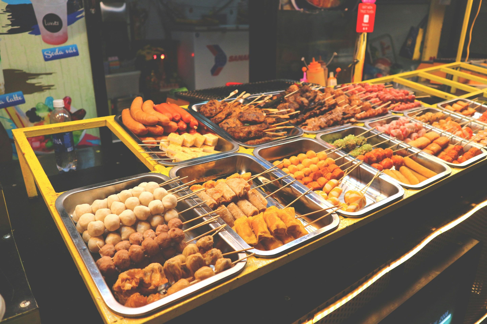
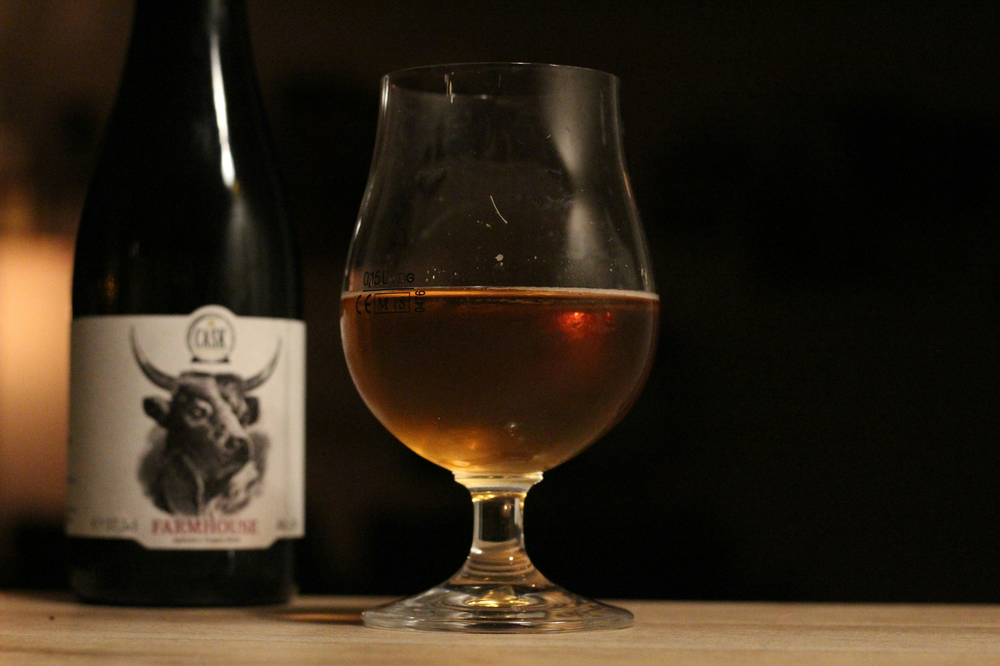

Zara Escapes is a luxury hospitality brand with its headquarters in Santorini, Greece, operating 20 beachfront properties across the Mediterranean. With over 100,000 annual guests and an average 4.7/5 satisfaction rating, the brand is recognised for exceptional guest experiences and eco-conscious practices.
Despite strong market performance, customer feedback remains fragmented across different sources, online reviews, email surveys, and in-person forms, creating bottlenecks in service recovery and limiting management’s visibility into guest sentiment trends.
At the end, we Implemented a Centralized Customer Feedback System integrating data from 20 properties into a unified Power BI dashboard for real-time sentiment tracking and service insights.

As the lead Business Analyst, I delivered a data-driven strategy to reduce LuxeMarts 34% annual employee turnover and enhance operational performance across warehouse and customer support teams. Through AS-IS process mapping and root cause analysis (5 Whys, Fishbone), I identified key inefficiencies impacting retention and productivity.
I defined end-to-end business and system requirements, introducing an Employee Portal, CRM integration, and real-time analytics dashboard. Using the MoSCoW framework, I ensured that 40% of high-value features were prioritized for the first release and built a 12-month implementation roadmap to guide delivery.
Projected results included a 50% boost in employee retention, 40% reduction in operational costs, and 65% faster process completion — directly improving workforce morale, compliance, and customer satisfaction.
Tools: JIRA, Confluence, Visio, Power BI | Methods: Agile, MoSCoW, Stakeholder Mapping

This project addresses inefficiencies in the meal ordering and distribution at Unilever's Uk offices. It helps curtail food wastage, time queues and increase the customer satisfaction.
At the end of this project, the company's revenue increased by 20%. This project was done using draw.io, fish bone diagram, and Jira.


This project aid in improving the operational, quality and workforce challenges of the brewery. It addressesd to scale sustaibably. We looked at it financial gap, the ROI and recommendation. The tools used for this project include draw.io, gap analysis.

Zenith medical centre is a well establish private healthcare facility offering a range of specialist medical services. Due to rapid growth, they are struggling to cope with the demand. I identified the the problem using the current state process and built As to be process.
I used both functional and non functional requirements, raci matrix to ensure that the issue was solved. At the end of this project, a recomendation was given and this solved the problems identified.

An annual review was carried out to assert the company's performance using the KPIs For this, we used excel to analyze and create an interactive dashboard for this project.

We carried out an annual review on the store using Postgred SQL, andd Power BI. We looked at the different KPIs and derived an interactive
dashboard using Power BI. At the end, the company revenue increased by 10%.

Synergy Enterprises, a global FMCG manufacturer, faces significant challenges due to fragmented HR systems and processes.
This has resulted in data silos, inefficiencies, and inconsistent human resources (HR) practices across the organization.To address these issues and support the company's strategic objectives, this business case proposes the implementation of a centralized, cloud-based Human Resource Management System (HRMS) using SAP SuccessFactors.
By implementing SAP SuccessFactors, Synergy Enterprises can streamline HR processes, improve efficiency, and drive business growth through better talent management and strategic decision-making. Thus, we suggest the use of Agile Scrum as the SDLC methodology.
.